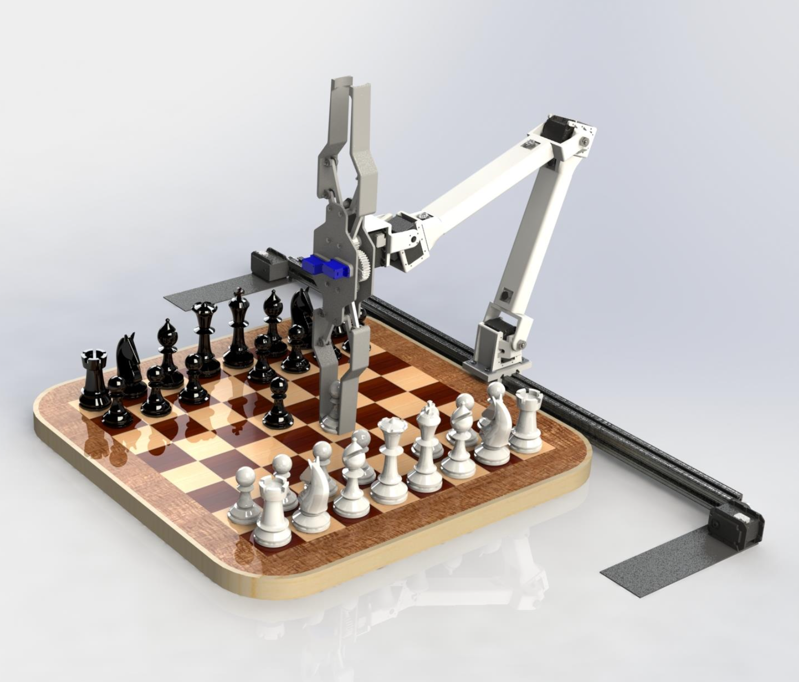
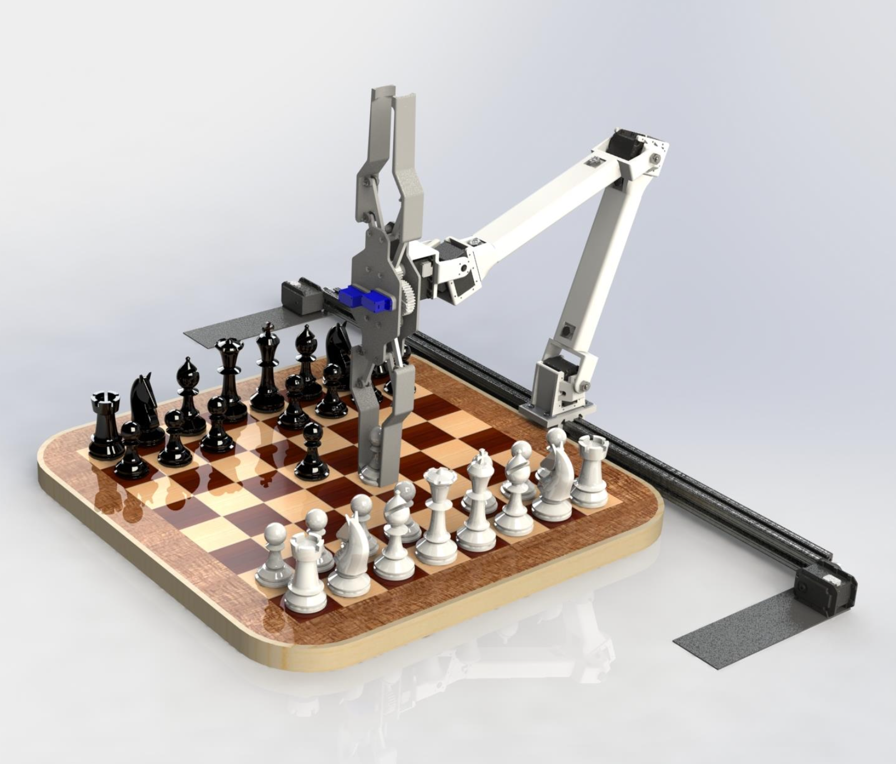

Coursework
Single Agent Path Planning within Dynamical Environments with Large-Scale Obstacles - ECE209AS
A final group project that explored the different topics within computational robotics which we learned throughout the course. We looked specifically at dynamical environment navigation and tackled the challenge of reducing the computational complexity and cost while ensuring safety for the traversing agent. I primarily took lead in setting up the Python simulation environment and scripting the QuadTree data structure that we used to decompose the original state space of the map into a smaller set. Other members wrote the graph-based search methods used to find a path within the generated graph (shown in blue) and updating the randomly simulated obstacles throughout the environment.
RC Car Racing Line Tracking Using Model Predictive Control - MAE271D
A final group project that showcases the effectiveness of model predictive control within a nonlinear system. Here, the RC car simulation runs off of a dynamical bicycle model which mimics the real system as close as possible (accounts for things such as tire slippage and lateral velocities), and uses model predictive control to generate a trajectory that is expected to drive the car towards the desired line. The left figure shows an MPC implemented by the PythonRobotics library written by AtsushiSakai, while the right figure shows a custom-written MPC running using a linear model.
Multi-Robot Ground Swarm Simulation Using a Minimally Invasive Safety Critical Controller - ECE236C
A course project required proposing a large-scale optimization problem that can utilize techniques learned in class to efficiently solve such problems. From a nonlinear controls course that I have taken in a previous quarter, I borrowed a problem from the textbook that involved a swarm of ground robots which uses a control safety function to ensure each robot avoids collisions with another. I applied Dykstra's projection algorithm to show that a significant improvement in computation speed is made thanks to optimizing the solving technique based on the problem characteristics.
Semi-Autonomous Marshland Soil Core Sampling Robot - ECE183D Capstone
For my senior capstone project, I collaborated with 2 other electrical engineering major students and 4 mechanical engineering major students to design a semi-autonomous marshland soil core sampling robot used for land surveying. Although we were unable to build a physical robot due to the pandemic forcing the course to being remote, we were able to come up with an in-depth design concept that involved a software simulation that generates an optimal surveying route. This was computed by using the same size K-means clustering algorithm and the ant colony optimization to find a path that reduces the load on the user.
Chess Handling with Extremity Surrogate System (C.H.E.S.S.) - MAEC163A
 

A course final project aimed to present our understanding of forward and inverse kinematics of serial robots. Our project group came up with a remote chess playing robot capable of manipulating the chess pieces of an actual chess board using a unique end effector that could hold two pieces simultaneously on both ends. This enables fast piece capturing reminiscent of how a human holds both pieces using one hand. Within the group, I was mainly in charge of developing the MATLAB simulation of our 5 DoF manipulator robot and writing a script in charge of generating smooth trajectories that properly avoided other pieces on the board.
Line Following Robot Competition - ECE3


Learned about basic circuitry and breadboard prototyping in class, and were tasked to assemble a line-following robot which relied on a pair of down-looking phototransistors which checked for the color of the ground it was passing over. We calculated the ideal resistor used in the voltage divider circuit to maximize the sensitivity, and even built an enclosure around the phototransistors to ensure no other environmental interferences affected its line-sensing capabilities. We also tuned our own PD controller which enabled a fast yet smooth drive, ultimately yielding 1st place within our lab section during the competition we had on finals week.
Hayato S. Kato